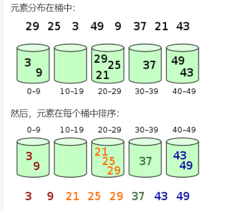

1.冒泡排序 冒泡排序（Bubble Sort）也是一种简单直观的排序算法。它重复地走访过要排序的数列，一次比较两个元素，如果他们的顺序错误就把他们交换过来。走访数列的工作是重复地进行直到没有再需要交换，也就是说该数列已经排序完成。这个算法的名字由来是因为越小的元素会经由交换慢慢”浮”到数列的顶端。
算法步骤
比较相邻的元素。如果第一个比第二个大，就交换他们两个。
对每一对相邻元素作同样的工作，从开始第一对到结尾的最后一对。这步做完后，最后的元素会是最大的数。
针对所有的元素重复以上的步骤，除了最后一个。
持续每次对越来越少的元素重复上面的步骤，直到没有任何一对数字需要比较。
代码实现
func bubbleSort (nums []int ) len (nums)for i := 0 ; i < length; i++ {for j := 0 ; j < length-1 -i; j++ {if nums[j] > nums[j+1 ] {1 ] = nums[j+1 ], nums[j]
2.选择排序 选择排序是一种简单直观的排序算法，无论什么数据进去都是 O(n²) 的时间复杂度。所以用到它的时候，数据规模越小越好。唯一的好处可能就是不占用额外的内存空间了吧。
算法步骤
首先在未排序序列中找到最小（大）元素，存放到排序序列的起始位置。
再从剩余未排序元素中继续寻找最小（大）元素，然后放到已排序序列的末尾。
重复第二步，直到所有元素均排序完毕。
代码实现
1 2 3 4 5 6 7 8 9 10 11 12 13 func selectionSort (arr []int ) len (arr)for i := 0 ; i < length-1 ; i++ {for j := i + 1 ; j < length; j++ {if arr[min] > arr[j] {
3.插入排序 插入排序是一种最简单直观的排序算法，它的工作原理是通过构建有序序列，对于未排序数据，在已排序序列中从后向前扫描，找到相应位置并插入。
插入排序和冒泡排序一样，也有一种优化算法，叫做拆半插入。
算法步骤
将第一待排序序列第一个元素看做一个有序序列，把第二个元素到最后一个元素当成是未排序序列。
从头到尾依次扫描未排序序列，将扫描到的每个元素插入有序序列的适当位置。（如果待插入的元素与有序序列中的某个元素相等，则将待插入元素插入到相等元素的后面。）
1 2 3 4 5 6 7 8 9 10 11 12 func insertSort (arr []int ) for i := range arr {1 for preIndex >= 0 && arr[preIndex] > current {1 ] = arr[preIndex]1 1 ] = current
4.希尔排序 希尔排序，也称递减增量排序算法，是插入排序的一种更高效的改进版本。但希尔排序是非稳定排序算法。
希尔排序是基于插入排序的以下两点性质而提出改进方法的：
插入排序在对几乎已经排好序的数据操作时，效率高，即可以达到线性排序的效率；
但插入排序一般来说是低效的，因为插入排序每次只能将数据移动一位；
希尔排序的基本思想是：先将整个待排序的记录序列分割成为若干子序列分别进行直接插入排序，待整个序列中的记录”基本有序”时，再对全体记录进行依次直接插入排序。
算法步骤
代码实现
1 2 3 4 5 6 7 8 9 10 11 12 13 14 15 func shellSort (arr []int ) len (arr)for gap := length / 2 ; gap > 0 ; gap = gap / 2 {for i := gap; i < length; i++ {for j >= 0 && arr[j] > temp {
5.归并排序 归并排序的主要思想是：把待排序的文件分成若干个子文件，先将每个子文件内的记录排序，再将已排序的子文件合并，得到完全排序的文件。
算法步骤
申请空间，使其大小为两个已经排序序列之和，该空间用来存放合并后的序列；
设定两个指针，最初位置分别为两个已经排序序列的起始位置；
比较两个指针所指向的元素，选择相对小的元素放入到合并空间，并移动指针到下一位置；
重复步骤 3 直到某一指针达到序列尾；
将另一序列剩下的所有元素直接复制到合并序列尾。
代码实现
1 2 3 4 5 6 7 8 9 10 11 12 13 14 15 16 17 18 19 20 21 22 23 24 25 26 27 28 29 30 31 func mergeSort (arr []int ) int {len (arr)if length < 2 {return arr2 return merge(mergeSort(left), mergeSort(right))func merge (left, right []int ) int {var result []int for len (left) != 0 && len (right) != 0 {if left[0 ] <= right[0 ] {append (result, left[0 ])1 :]else {append (result, right[0 ])1 :]for len (left) != 0 {append (result, left[0 ])1 :]for len (right) != 0 {append (result, right[0 ])1 :]return result
6.快速排序 快速排序(QuickSort) 是由冒泡排序改进而得的。在冒泡排序过程中， 只对相邻的两个记录进行比较，因此每次交换两个相邻记录时只能消除一个逆序。如果能通过两个(不相邻)记录的一次交换，消除多个逆序，则会大大加快排序的速度。快速排序方法中的一次交换可能消除多个逆序。
算法步骤
从数列中挑出一个元素，称为 “基准”（pivot）;
重新排序数列，所有元素比基准值小的摆放在基准前面，所有元素比基准值大的摆在基准的后面（相同的数可以到任一边）。在这个分区退出之后，该基准就处于数列的中间位置。这个称为分区（partition）操作；
递归地（recursive）把小于基准值元素的子数列和大于基准值元素的子数列排序；
代码实现
1 2 3 4 5 6 7 8 9 10 11 12 13 14 15 16 17 18 19 20 21 22 23 24 25 26 func _quickSort (arr []int ) int {return quickSort(arr, 0 , len (arr)-1 )func quickSort (arr []int , low, high int ) int {if low < high {-1 )1 , high)return arrfunc partition (arr []int , low, high int ) int {for low < high {for low < high && arr[high] >= tmp {for low < high && arr[low] <= tmp {return low
7.堆排序 堆排序（Heapsort）是指利用堆这种数据结构所设计的一种排序算法。堆积是一个近似完全二叉树的结构，并同时满足堆积的性质：即子结点的键值或索引总是小于（或者大于）它的父节点。堆排序可以说是一种利用堆的概念来排序的选择排序。分为两种方法：
大顶堆：每个节点的值都大于或等于其子节点的值，在堆排序算法中用于升序排列；
小顶堆：每个节点的值都小于或等于其子节点的值，在堆排序算法中用于降序排列；
堆排序的平均时间复杂度为 Ο(nlogn)。
算法步骤
创建一个堆 H[0……n-1]；
把堆首（最大值）和堆尾互换；
把堆的尺寸缩小 1，并调用 shift_down(0)，目的是把新的数组顶端数据调整到相应位置；
重复步骤 2，直到堆的尺寸为 1。
代码实现
1 2 3 4 5 6 7 8 9 10 11 12 13 14 15 16 17 18 19 20 21 22 23 24 25 26 27 28 29 30 31 32 33 func heapSort (arr []int ) int {len (arr)for i := arrLen - 1 ; i >= 0 ; i-- {0 , i)1 0 , arrLen)return arrfunc buildMaxHeap (arr []int , arrLen int ) for i := arrLen / 2 ; i >= 0 ; i-- {func adjustHeap (arr []int , i, arrLen int ) 2 *i + 1 2 *i + 2 if left < arrLen && arr[left] > arr[largest] {if right < arrLen && arr[right] > arr[largest] {if largest != i {func swap (arr []int , i, j int )
8.计数排序 参考：漫画：什么是计数排序？-五分钟学算法
当输入的元素是 n 个 0 到 k 之间的整数时，它的运行时间是 Θ(n + k)。计数排序不是比较排序，排序的速度快于任何比较排序算法。
由于用来计数的数组C的长度取决于待排序数组中数据的范围（等于待排序数组的最大值与最小值的差加上1），这使得计数排序对于数据范围很大的数组，需要大量时间和内存。
算法步骤
算法的步骤如下：
（1）找出待排序的数组中最大和最小的元素
（2）统计数组中每个值为i的元素出现的次数，存入数组C的第i项
（3）对所有的计数累加（从C中的第一个元素开始，每一项和前一项相加）
（4）反向填充目标数组：将每个元素i放在新数组的第C(i)项，每放一个元素就将C(i)减去1
代码实现
1 2 3 4 5 6 7 8 9 10 11 12 13 14 15 16 17 18 19 20 21 22 23 24 25 26 func countSort (arr []int ) int {var max = arr[0 ]var min = arr[0 ]for i := 1 ; i < len (arr); i++ {if arr[i] > max {if arr[i] < min {make ([]int , max-min+1 )for _, v := range arr {0 for k, v := range count {if v != 0 {for j := 0 ; j < v; j++ {return arr
9.桶排序 桶排序是计数排序的升级版。它利用了函数的映射关系，高效与否的关键就在于这个映射函数的确定。为了使桶排序更加高效，我们需要做到这两点：
在额外空间充足的情况下，尽量增大桶的数量
使用的映射函数能够将输入的 N 个数据均匀的分配到 K 个桶中
同时，对于桶中元素的排序，选择何种比较排序算法对于性能的影响至关重要。
1. 什么时候最快
当输入的数据可以均匀的分配到每一个桶中。
2. 什么时候最慢
当输入的数据被分配到了同一个桶中。
3. 示意图
元素分布在桶中：

代码实现
1 2 3 4 5 6 7 8 9 10 11 12 13 14 15 16 17 18 func bucketSort (arr []int , max, num int ) make ([][]int , num)var index int for _, v := range arr {1 ) / maxappend (buckets[index], v)0 for i := 0 ; i < num; i++ {len (buckets[i])if bucketLen > 0 {copy (arr[tmpPos:], buckets[i])
10.基数排序 基数排序是一种非比较型整数排序算法，其原理是将整数按位数切割成不同的数字，然后按每个位数分别比较。由于整数也可以表达字符串（比如名字或日期）和特定格式的浮点数，所以基数排序也不是只能使用于整数。
基数排序 vs 计数排序 vs 桶排序
这三种排序算法都利用了桶的概念，但对桶的使用方法上有明显差异：
基数排序：根据键值的每位数字来分配桶；
计数排序：每个桶只存储单一键值；
桶排序：每个桶存储一定范围的数值
基数排序按取数方向分为两种：从左取每个数列上的数，为最高位优先（Most Significant Digit first, MSD） ；从右取每个数列上的数，为最低位优先（Least Significant Digit first, LSD） 。下列以LSD为例。
基数排序步骤 ：
将所有待比较数值（正整数）统一为同样的数位长度，数位较短的数前面补零
从最低位开始，依次进行一次排序
从最低位排序一直到最高位排序完成以后, 数列就变成一个有序序列
代码实现
1 2 3 4 5 6 7 8 9 10 11 12 13 14 15 16 17 18 19 20 21 22 23 24 25 26 27 28 29 30 31 32 33 34 35 36 37 38 39 40 func radixSort (theArray []int , max int ) var count = 0 for max%10 > 0 {10 for i := 0 ; i <= count; i++ {int (math.Pow10(i))make ([][]int , 10 )for k := 0 ; k < len (theArray); k++ {10 append (bucket[theResidue], theArray[k])var x = 0 for p := 0 ; p < len (bucket); p++ {for q := 0 ; q < len (bucket[p]); q++ {if bucket[p][q] != 0 {else {break
参考：菜鸟教程 、排序算法